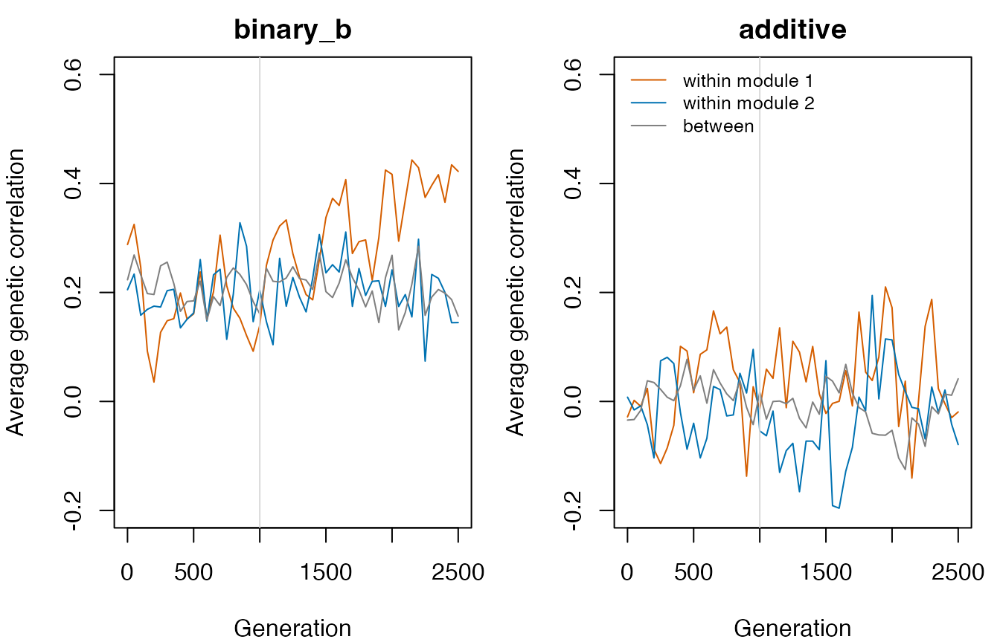
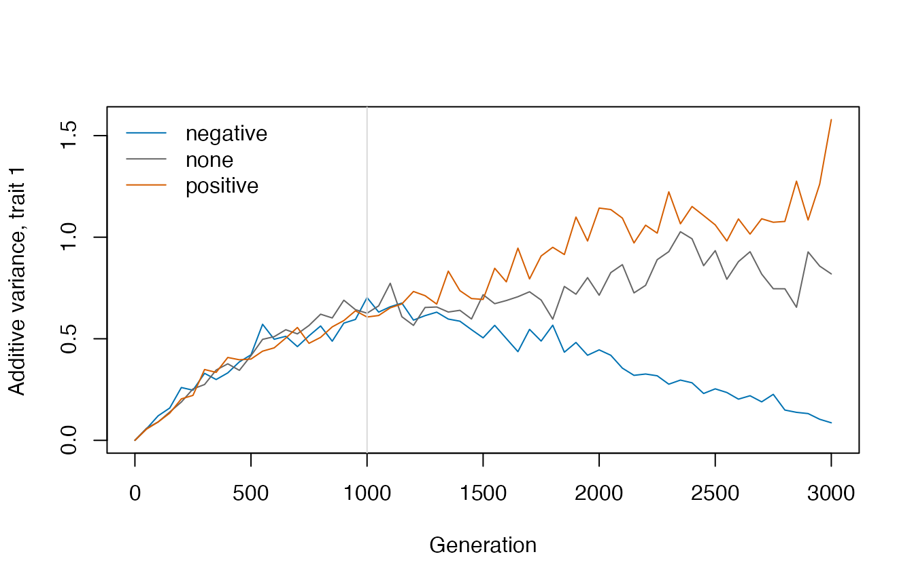
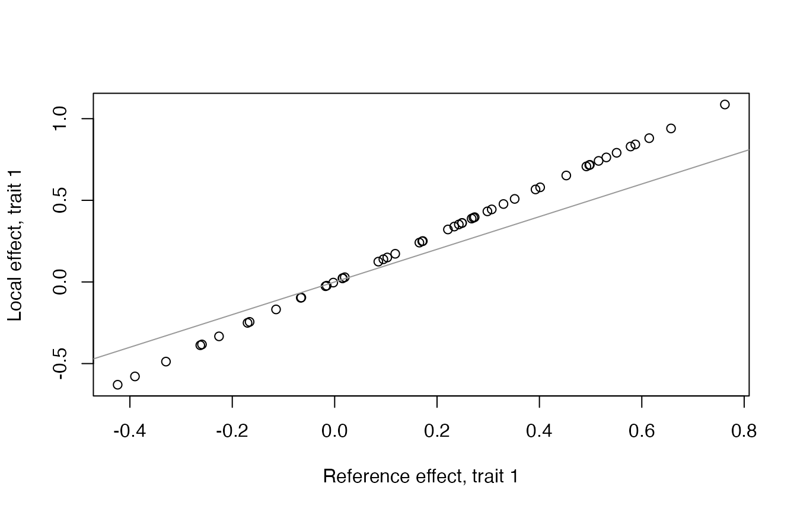

The genetic architecture decides how variation is generated and
inherited, and with it how G can evolve. This vignette compares the
three architectures in evomod2 with small simulations, then shows how
recombination affects G. The simulations are short so the vignette
builds quickly; the examples in
system.file("examples", package = "evomod2") run longer,
replicated versions.
Three architectures
All three have diploid loci whose two alleles are added up within the locus. They differ in what an allele is and how loci combine:
| Architecture | An allele is | Genotypic value | Mutation |
|---|---|---|---|
additive() |
an effect vector, one value per trait | sum over loci |
mutation(): adds a multivariate normal vector |
binary_b() |
a scalar effect \(y\) and a 0/1 column of \(B\) | \(B y\) |
binary_b_mutation(): changes y, flips
entries of \(B\)
|
multilinear() |
an effect vector | sum over loci plus pairwise interactions \(\varepsilon(Y_i, Y_j)\) | mutation() |
In binary_b() an allele affects the traits marked in its
column of \(B\), all by the same
amount, and \(B\) mutates, so the
pattern of pleiotropy itself can evolve. In additive()
every allele affects every trait with independent effects.
multilinear() adds epistasis: the effect of a locus depends
on the rest of the genome.
Pleiotropy and modularity under corridor selection
Four traits, two modules (traits 1-2 and 3-4). After stabilizing selection, the optimum of module 1 moves (corridor selection):
corridor <- list(
stabilizing(1000, omega = 10),
directional(1500, delta_theta = c(0.004, 0.004, 0, 0), omega = 10)
)
models <- list(
binary_b = evomod_model(binary_b(loci = 50, traits = 4),
binary_b_mutation(rate = 0.001, sd = 0.2, rate_b = 0.0005),
env_sd = 0.8, init_sd = 0.2),
additive = evomod_model(additive(loci = 50, traits = 4),
mutation(rate = 0.001, cov = 0.2),
env_sd = 0.8, init_sd = 0.2)
)
pops <- lapply(models, evolve, regimes = corridor, n = 500, record_every = 50, seed = 1)Average genetic correlations within and between the modules, through time:
module_trace <- function(pop, name) {
G <- g_matrices(pop)
do.call(rbind, lapply(names(G), function(gen) {
a <- avg_corr(G[[gen]], modules = list(1:2, 3:4))
data.frame(architecture = name, generation = as.integer(gen),
within_1 = a$within[1], within_2 = a$within[2], between = a$between)
}))
}
trace <- do.call(rbind, Map(module_trace, pops, names(pops)))
op <- par(mfrow = c(1, 2), mar = c(4, 4, 2, 1))
for (arch in names(pops)) {
d <- trace[trace$architecture == arch, ]
matplot(d$generation, d[, c("within_1", "within_2", "between")], type = "l", lty = 1,
col = c("#D55E00", "#0072B2", "grey50"), ylim = c(-0.2, 0.6),
xlab = "Generation", ylab = "Average genetic correlation", main = arch)
abline(v = 1000, col = "grey85")
}
legend("topleft", c("within module 1", "within module 2", "between"),
col = c("#D55E00", "#0072B2", "grey50"), lty = 1, bty = "n", cex = 0.8)
par(op)With a binary \(B\), alleles
affecting several traits create correlations, and selection can change
which traits alleles affect. (These are single populations, so the
traces are noisy.) In the additive model, correlations only appear as
selection enriches alleles whose effects on the selected traits point
the same way. inst/examples/corridor_selection.R runs this
comparison with 20 replicates.
Multilinear epistasis
With multilinear epistasis the effect of an allele depends on the genetic background. Positive directional epistasis (here \(\varepsilon_{111} > 0\)) makes substitutions in trait 1 larger as the population moves in the positive direction, so additive variance grows under directional selection; negative epistasis shrinks it:
self_epistasis <- function(e) {
E <- array(0, c(2, 2, 2))
E[1, 1, 1] <- e
E
}
epistasis <- c(negative = -0.05, none = 0, positive = 0.05)
selection <- list(stabilizing(1000, omega = 20),
directional(2000, delta_theta = c(0.005, 0), omega = 20))
G11 <- sapply(epistasis, function(e) {
arch <- if (e == 0) additive(50, 2) else multilinear(50, 2, self_epistasis(e))
m <- evomod_model(arch, mutation(rate = 0.005, cov = 0.05), env_sd = 1)
pop <- evolve(m, selection, n = 500, record_every = 50, seed = 2)
v <- variances(pop)
v$G[v$trait == "trait1"]
})
gens <- seq(0, 3000, by = 50) # recorded generations
matplot(gens, G11, type = "l", lty = 1, col = c("#0072B2", "grey40", "#D55E00"),
xlab = "Generation", ylab = "Additive variance, trait 1")
abline(v = 1000, col = "grey85")
legend("topleft", names(epistasis), col = c("#0072B2", "grey40", "#D55E00"), lty = 1, bty = "n")
local_effects() gives the effect of each locus in the
background of the rest of the genome. After the population has moved in
the positive direction of trait 1, positive epistasis amplifies every
locus effect on trait 1 (by about \(1 +
\varepsilon S\), where \(S\) is
the sum of the other locus effects), so local effects lie on a line
steeper than 1 when plotted against the reference effects:
m <- evomod_model(multilinear(50, 2, self_epistasis(0.05)),
mutation(rate = 0.005, cov = 0.05), env_sd = 1)
pop <- evolve(m, selection, n = 500, record_every = 500, seed = 2)
L <- local_effects(pop, individual = 1)
Y <- local_effects(evomod_model(additive(50, 2), mutation(0.1, 0.1)),
alleles = genomes(pop)[, , 1]) # reference (additive) effects
plot(Y[1, ], L[1, ], xlab = "Reference effect, trait 1", ylab = "Local effect, trait 1")
abline(0, 1, col = "grey60")
Linkage and the decomposition of G
By default loci recombine freely. A genetic map places loci on chromosomes:
linked <- evomod_model(additive(50, 4), mutation(rate = 0.001, cov = 0.2),
env_sd = 0.8, init_sd = 0.2,
recombination = genetic_map(chromosomes = 1, length = 0.5))
linked$recombination$rates[1:3] # between neighbouring loci
#> [1] 0.01010066 0.01010066 0.01010066G splits into a genic part, the G expected without linkage disequilibrium, and the part due to linkage disequilibrium between loci. Stabilizing selection builds negative linkage disequilibrium that hides part of the genic variance (the Bulmer effect), much more strongly when loci are linked:
free <- evomod_model(additive(50, 4), mutation(rate = 0.001, cov = 0.2),
env_sd = 0.8, init_sd = 0.2)
stab <- stabilizing(1500, omega = 5)
decomp <- sapply(list(free = free, linked = linked), function(m) {
d <- g_decomposition(evolve(m, stab, n = 500, record_every = 500, seed = 3))
c(G = d$G[1, 1], genic = d$genic[1, 1], ld = d$ld[1, 1])
})
round(decomp, 3)
#> free linked
#> G 0.381 0.359
#> genic 0.370 0.715
#> ld 0.011 -0.356g_matrices(pop, "genic") and
g_matrices(pop, "ld") give the two parts at every recorded
generation. inst/examples/corridor_linkage.R compares the
binary B and additive architectures under free recombination and tight
linkage.
For architectures where genotypic values are not sums of allele effects (multilinear epistasis), the same split can be estimated by shuffling alleles among individuals at each locus (do O & Whitlock 2023). Here for the population with positive epistasis from the previous section:
lapply(g_decomposition(pop, method = "shuffle", shuffles = 10), round, 3)
#> $G
#> trait1 trait2
#> trait1 1.579 0.027
#> trait2 0.027 0.712
#>
#> $genic
#> trait1 trait2
#> trait1 1.533 0.006
#> trait2 0.006 0.741
#>
#> $ld
#> trait1 trait2
#> trait1 0.046 0.021
#> trait2 0.021 -0.029Mutational covariance
New mutations have effects that depend on the genetic background when
there is epistasis. mutational_covariance() applies single
mutations to genomes of the population and measures their effects. In
the additive model the covariance of the effects of one mutation is the
mutational covariance of the model (\(0.05^2\) here); with positive directional
epistasis, after the population moved in the positive direction of trait
1, a mutation of size \(d\) at trait 1
changes the trait by \(d\,(1 + \varepsilon (S
- Y_l))\), so mutational effects are larger (their mean stays
zero, because the map is linear in each locus):
add <- evomod_model(additive(50, 2), mutation(rate = 0.005, cov = 0.05), env_sd = 1)
pop_add <- evolve(add, selection, n = 500, record_every = 500, seed = 2)
mc <- list(additive = mutational_covariance(pop_add, n = 20000),
epistatic = mutational_covariance(pop, n = 20000))
signif(sapply(mc, function(x) c(var_trait1 = x$per_mutation[1, 1], mean_trait1 = x$mean[[1]])), 2)
#> additive epistatic
#> var_trait1 2.5e-03 0.0049
#> mean_trait1 -4.3e-05 -0.0006